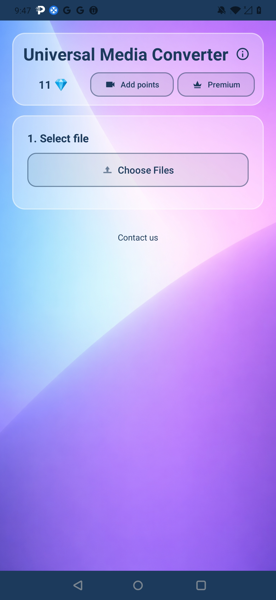
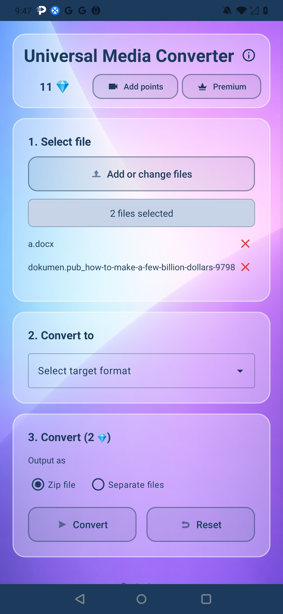
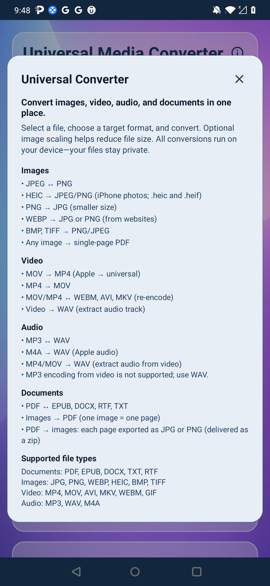
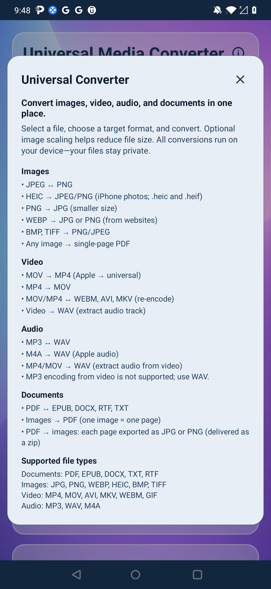
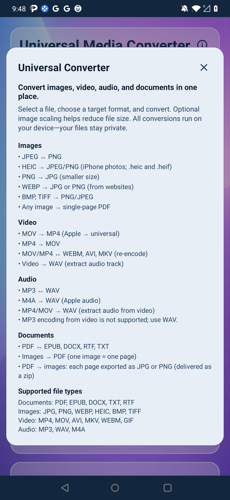

Universal Media Converter
A practical all-in-one converter for documents, images, audio, and video formats.
Core capabilities
- Convert common document types including PDF, DOCX, EPUB, and TXT.
- Switch between image formats like JPG, PNG, BMP, TIFF, and WebP.
- Handle MP3/WAV/FLAC audio and MP4/MOV/MKV/WebM video conversions.
Screenshots


 

